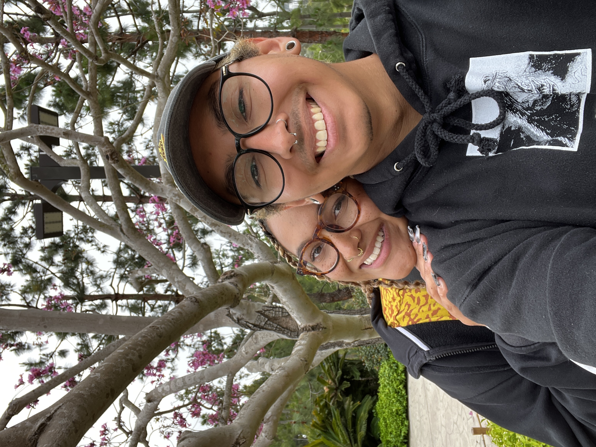
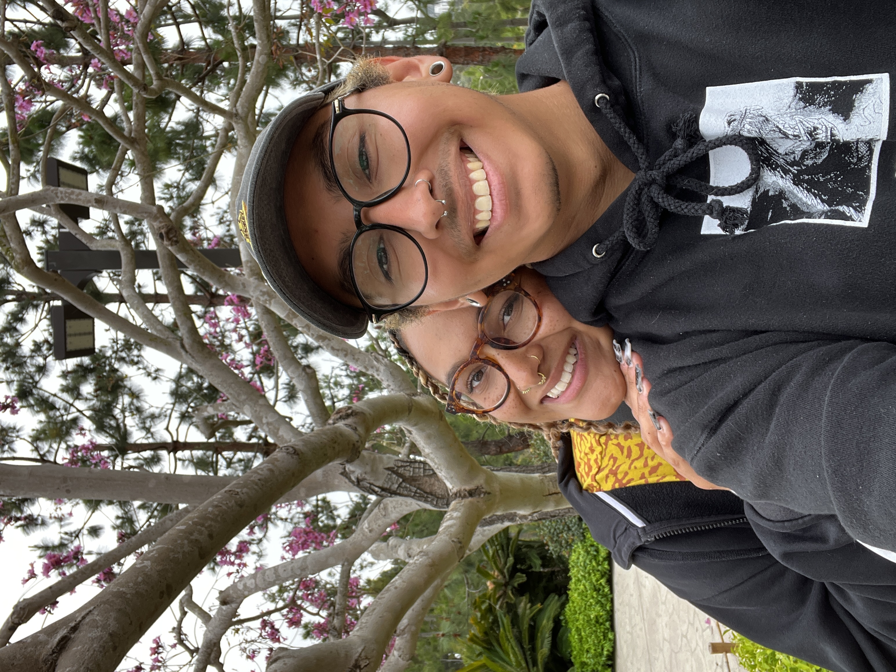

Welcome to a page about Rose, the love of my life.
Flowers and Coffee
Who exactly is Rose Glass?
Rose Glass is many things!
A Daughter
A Sister
A Friend
Perhaps most importantly (to me), Rose Glass is...
My Other Half
 

What are some of Rose's favorite things?
Rose loves to watch shows!
Love is Blind

Lost

Parks and Recreation

Rose loves to watch movies!
The Kingsman Movies


Wait a minute...
I can see why she likes those movies so much.
Rose loves Unicorns!


I would like to think...Rose loves me!
A Letter to Rose
Dear Rose,
Oh my goodness, a poem AND a letter? You are one lucky gal! I'll have you know, I cried when I was writing that poem...
Thank you for making me the luckiest person on the planet. Nearly 3 Christmases together and I still get excited pouring myself into things to make for you. I know you love handwritten letters, but seeing as you'll be a bit of a distance from me this year, I guess this will have to do. I love you, my beautiful Rose. Everyday you make me feel as if I'm truly loved, even on days we are extra angy. I am not only going to give you the physical presents I got for you this year, but this is a welcome addition that I thought of. I haven't decided to give this to you on Christmas Day, or on our Christmas after you get back! Heck, maybe I'll even give this to you today!
When I think back to when we first met and compare it to now, I honestly cannot believe the changes. We used to be so different. You were a lead at QC, and I was a little baby barista! Talk about an inappropriate workplace relationship! Just kidding hehe, you didn't even notice me back then, but I sure did notice you ( ' 3 ' )
As cute as I thought you were back then, you've only grown more beautiful as the days have gone by. I see the development you've made since we first started talking, and I am so proud of how much you've grown. You've also made ME grow, and that's not an easy thing to do! I see the hard work you pour your everything in, whether it's work, your friendships, and especially our relationship. I see you. I appreciate everything about you. Of course I say it, but I want you to really take these next few words you read in...
I love you. I don't think I could ever be as happy as I am now, even on my worst days. You are the light at the end of the tunnel. You are the reason I get up in the morning (as early as you make me hehe) and the comfort I fall asleep to. I can't wait for what our future holds together because I know with you, anything will be an adventure.